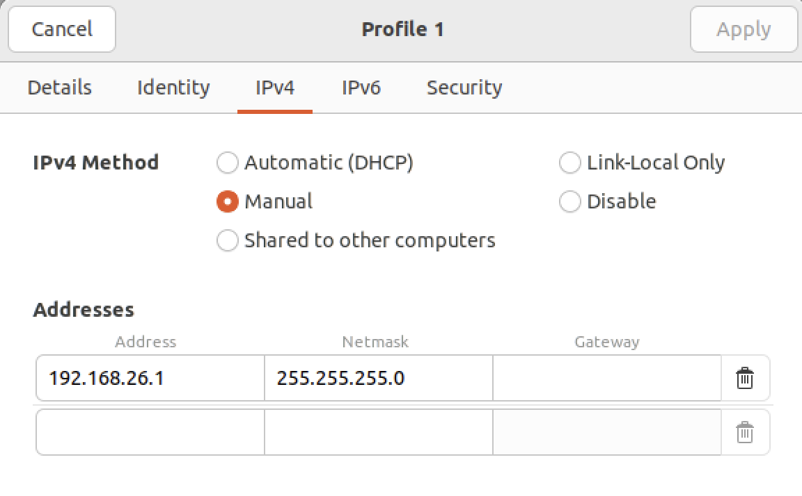
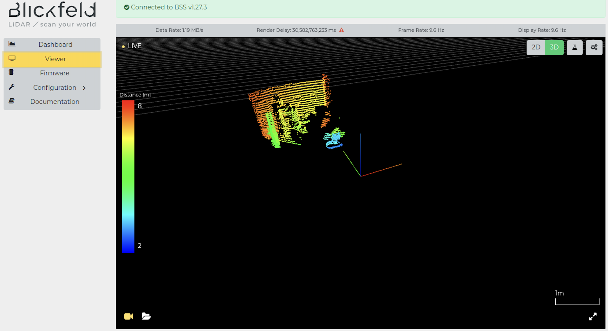
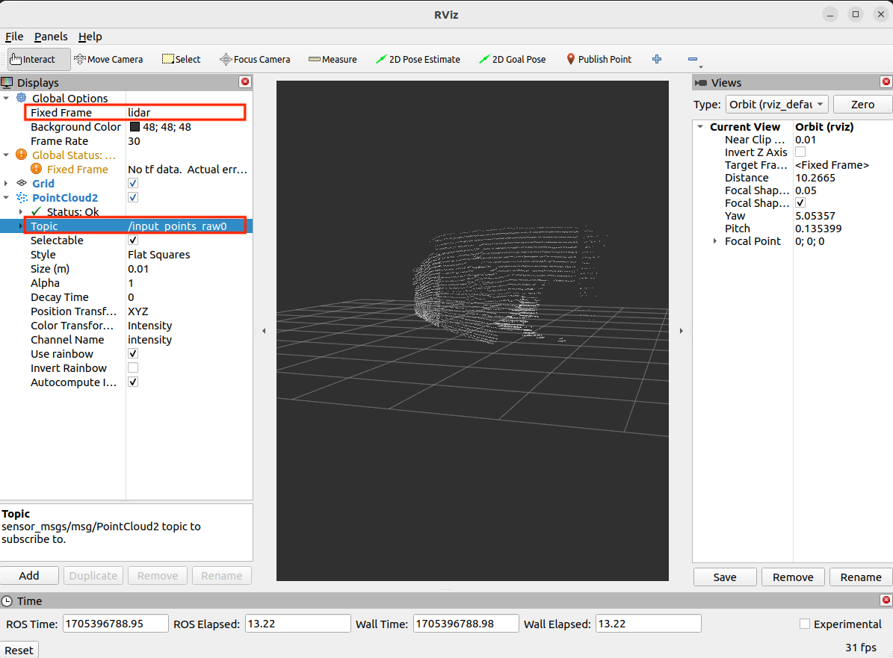

Blickfield Cube1
TODO(許)
The BLS driver.
- Connect with Blickfeld Cube1.
- Add a wired interface with the IP address 192.168.26.1/24 
- The displayed technology is only supported by the Chrome browser. Use Chrome to check if the webpage correctly displays the point cloud. 
- Install blickfeld-scanner-library (BSL). Please check the official installation document.
# download
sudo apt install libprotobuf-dev libprotobuf23 protobuf-compiler
git clone https://github.com/Blickfeld/blickfeld-scanner-lib.git
cd blickfeld-scanner-lib
git checkout v2.20.6
git submodule update --init --recursive
# build
cmake -B build -S .
cmake --build build --parallel
sudo cmake --install build
- Build blickfeld cube 1 ROS2 package
Blickfeld ROS2 package official document
-
Download Cube 1 ROS 2 Driver from https://www.blickfeld.com/resources/
-
Install dependencies
sudo apt install ros-${ROS_DISTRO}-diagnostic-updater
sudo apt install ros-${ROS_DISTRO}-diagnostic-msgs
- Source ROS2 and create colcon workspace
source /opt/ros/${ROS_DISTRO}/setup.bash
mkdir -p ~/blickfeld/src
- Move the
ros2_blickfeld_driverpackage intoblickfeld/src - Modify
blickfeld/src/ros2_blickfeld_driver_src-v1.5.5/CMakeLists.txt- Change C++ standard from 14 to 17
- set(CMAKE_CXX_STANDARD 14)
+ set(CMAKE_CXX_STANDARD 17)
- Update Blickfeld scanner package version from 2.18.2 to 2.20.6
- find_package(blickfeld-scanner 2.18.2 REQUIRED full)
+ find_package(blickfeld-scanner 2.20.6 REQUIRED full)
- Add include directories for ROS Humble
+ include_directories(/opt/ros/humble/include/tf2_geometry_msgs)
+ include_directories(/opt/ros/humble/include/tf2)
+ include_directories(/opt/ros/humble/include/tf2_ros)
+ include_directories(/opt/ros/humble/include/cv_bridge)
+ include_directories(/opt/ros/humble/include/rclcpp)
+ include_directories(/opt/ros/humble/include/rcl)
+ include_directories(/opt/ros/humble/include/rcl_yaml_param_parser)
+ include_directories(/opt/ros/humble/include/rcpputils)
+ include_directories(/opt/ros/humble/include/tracetools)
+ include_directories(/opt/ros/humble/include/rcl_interfaces)
+ include_directories(/opt/ros/humble/include/libstatistics_collector)
+ include_directories(/opt/ros/humble/include/statistics_msgs)
+ include_directories(/opt/ros/humble/include/diagnostic_msgs)
+ include_directories(/opt/ros/humble/include/rclcpp_components)
+ include_directories(/opt/ros/humble/include/class_loader)|
-
Modify
blickfeld/src/ros2_blickfeld_driver_src-v1.5.5/src/blickfeld_driver.cpp- Add
.c_str()to convert the string to a C-style string
- Add
- log_message.second.str());
+ log_message.second.str().c_str());
- Build your workspace
cd ~/blickfield/src
colcon build --symlink-install --cmake-clean-first
- Running the Blickfeld ROS2 node
- Switching to desired DDS
export RMW_IMPLEMENTATION=rmw_cyclonedds_cpp
- Run the ROS2 node, change the blickfeld topic name to fit autoware pointcloud_preprocessor
ros2 run blickfeld_driver blickfeld_driver_node \
--ros-args -p host:=192.168.26.26 \
--remap __node:=bf_lidar \
--remap bf_lidar/point_cloud_out:=input_points_raw0
- Visualize the published data
- Launch rviz2, config Fixed Frame to
lidarand Topic toinput_points_raw0
- Launch rviz2, config Fixed Frame to
rviz2
